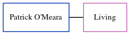

Patrick O'meara, the husband of Gwendolyn E Page (the fourth cousin once-removed on the father's side of Nigel Horne), and married Gwendolyn in Folkestone, Kent, England around May 19721.
Citations
England & Wales Marriages 1837-2005 - Findmypast
Family Tree

Generated by ged2site. Last updated on Jun 11, 2024